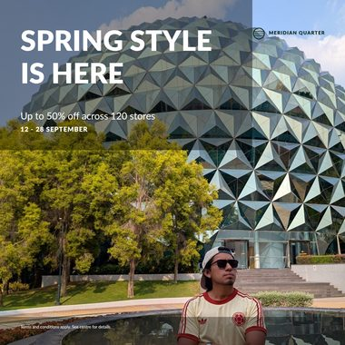
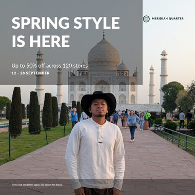
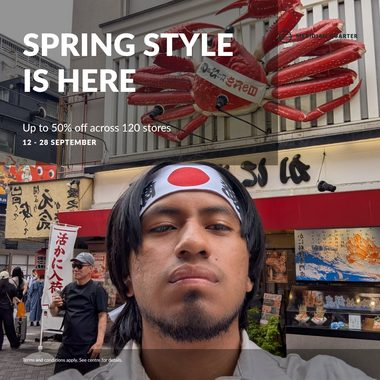
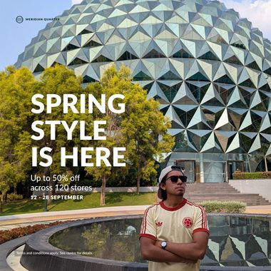
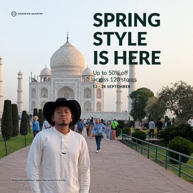
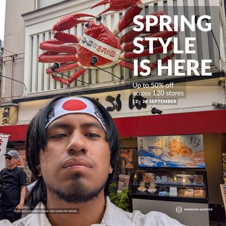

Mismo master, mismos formatos, mismos constraints. Lo unico que cambia
es el pixel. Si el layout se decide mirando la fotografia, tiene que moverse; si sale
de una regla geometrica sobre una caja, no puede.
Las tres fotografias son propias. La A es la del
master. La B es otro sujeto en formato apaisado. La C
lleva el sujeto muy cerca, con una cara de 1045px, para forzar al recorte.
Con solo la foto B el criterio no se habria cumplido: un unico formato pasaba
del umbral. Hizo falta la tercera, y se dice, porque el numero que importa es el que
se midio, no el que convenia.
Instagram feed 1:1 · 1080×1080
Foto Ala del master
Foto Botro sujeto, apaisada
Foto Csujeto muy cercano, cara de 1045px
Template + constraintsel texto no se mueve



Decision desde el arteel texto sigue a la fotografia



Desplazamiento medido, los 5 formatos del video
Distancia que recorre la esquina del bloque de texto respecto de la foto
A, en pixeles de lienzo, tomada del SVG entregado. Se muestra el mayor de los dos
cambios de foto. Umbral declarado de movimiento visible: 100px.
Formato
Lienzo
Desde el arte
Constraints
Instagram 4:5
1080×1350
19 px
0 px
Story / Reel 9:16
1080×1920
19 px
0 px
Leaderboard 728x90
728×90
0 px
0 px
MPU 300x250
300×250
29 px
0 px
Instagram feed 1:1
1080×1080
302 px
0 px
1 de 5 formatos mueven el
bloque de texto mas de 100px por la via del arte.
0 de 5 por la via de constraints, con
un desplazamiento maximo medido de 0 px.
El desplazamiento resulto mal
instrumento, y se deja a la vista en lugar de cambiarlo por el que salio bien.
Se fijo el umbral en 100px antes de medir, y por la via del arte solo
1 de 5 formatos lo superan. La razon es de diseno: el motor
tira de la composicion del master a proposito, asi que cuando la fotografia no
obliga a mover el texto, no lo mueve. Moverlo porque si seria peor.
Lo que si separa a los dos mecanismos es cuantas decisiones se
rehacen.
Decisiones de layout que se rehacen al cambiar la fotografia
Decision
Desde el arte
Constraints
recorte
5 de 5
5 de 5
colores
3 de 5
0 de 5
cuerpos
3 de 5
0 de 5
scrims
4 de 5
0 de 5
Por la via de constraints, lo unico que
cambia al cambiar la fotografia es que pixeles se recortan. Cuerpos,
colores, scrims, elementos retirados y variante del logo son identicos en los
5 formatos. Un constraint no mira la fotografia: no tiene con que.